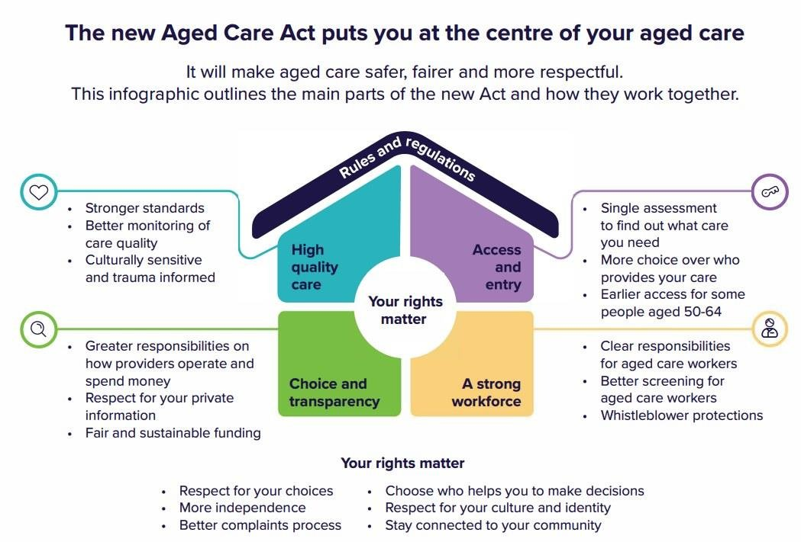
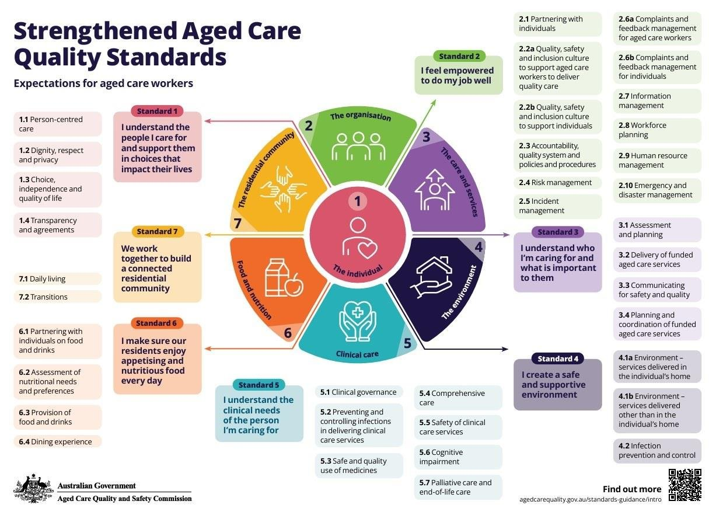

The rules that guide community services, the rights of every person, and where you find the rules for your job.
Welcome to Work legally and ethically. Every day at work you make choices. Some choices are about the law. Others are about what is right and fair. This first lesson shows you the rules that guide our work and where to find them. Two friends follow you down the page. Loose Lips Larry talks too much and takes shortcuts. Justine the Justice Scales weighs things up and does the right thing. Click them to hear what they think.
1 What guides our work: law and ethics
Four things guide community services: laws, court decisions, funding rules and practice standards.
Listen to the explanation
NP3 S1 P1Legislation is a law made by Parliament. It is also called an Act or statute law. (Qld) means a Queensland law. (Cth) means a Commonwealth law for all of Australia.
NP3 S1 P2Laws do three things: they direct (say what people must do), protect (keep people safe) and inform (give information).
NP3 S1 P3Common law is made by judges in court cases. For example, a person can take a worker to court if the worker did not take enough care.
NP3 S1 P4When there is no law about something, governments and organisations write standards and guidelines. Then every service works in the same safe way.
NP3 S1 P5Law is a set of rules everyone must follow. Breaking the law can mean fines, court or prison.
NP3 S1 P6Ethics is about what is right and fair. Ethics are guided by your values and your purpose. There is often more than one good way to respond, and there is no fine for an ethical breach.
Every person has human rights. Your job is to meet people's needs and protect their rights.
Listen to the explanation
NP3 S2 P1The Universal Declaration of Human Rights was written by the United Nations in 1948. It says human rights belong to every person, no matter who they are or where they live.
NP3 S2 P2Human rights include: being treated with dignity and respect, being safe, having privacy, making your own choices, and being treated fairly (no discrimination).
NP3 S2 P3A need is something a person must have to live well, for example food, water, shelter, safety and health care.
NP3 S2 P4A right is something a person is entitled to (allowed to have), for example privacy or the right to say no.
NP3 S2 P5Needs and rights work together. A person does not have the right to get everything they want from a worker. And their rights are not more important than their needs. You support both.
NP3 S2 P6In Queensland, the Human Rights Act 2019 (Qld) protects people's rights. Australia also signed the UN Convention on the Rights of Persons with Disabilities.
Try itRights and needs
Choose the best answer.
The notes above will blur while you try. You can peek any time.
There are many laws for community services. Flip the cards to meet the ones you will use most. Learn the name, the year and (Qld) or (Cth).
Listen to the explanation
When you name a law in an answer, write the full name, the year and (Qld) or (Cth), for example Aged Care Act 2024 (Cth).
Aged Care Act 2024 (Cth)
The main law for aged care. It started on 1 November 2025 and puts the rights of older people first.
Disability Services Act 2006 (Qld)
The main Queensland law for disability services. It protects the rights of people with disability and makes services safe.
NDIS Act 2013 (Cth)
Set up the National Disability Insurance Scheme, which pays for supports so people with disability can reach their goals.
Privacy Act 1988 (Cth) and Information Privacy Act 2009 (Qld)
Protect personal information: how it is collected, stored, used and shared.
Discrimination laws
Anti-Discrimination Act 1991 (Qld), Disability Discrimination Act 1992 (Cth), Age Discrimination Act 2004 (Cth). It is against the law to treat people unfairly because of attributes like age, disability, race, sex or religion.
Work Health and Safety Act 2011 (Qld)
Keeps workers and everyone at the workplace safe. You have duties under it too.
Guardianship and Administration Act 2000 (Qld)
Helps adults who cannot make some decisions for themselves. It explains who can decide for them, and how.
Mental Health Act 2016 (Qld)
Protects the rights of people with a mental illness, including when they get treatment they did not ask for.
Medicines and Poisons Act 2019 (Qld)
Controls who can give or handle medicines, especially strong ones like morphine. Older resources name the Health (Drugs and Poisons) Regulation 1996.
Human Rights Act 2019 (Qld)
Protects human rights in Queensland. Government services must respect them.
Watch out The old Aged Care Act 1997 is gone. Write Aged Care Act 2024 (Cth).
The Aged Care Act 2024 (Cth) is the main law for aged care. It started on 1 November 2025. New since 2025
Listen to the explanation
NP3 S4 P1It replaced the Aged Care Act 1997. The Department of Health, Disability and Ageing runs it. The government uses it to pay aged care providers and to control the fees they charge.
NP3 S4 P2Objective 1: pay for aged care and help people get good quality services.
NP3 S4 P3Objective 2: avoid doubling up on services (two services doing the same job).
NP3 S4 P4Objective 3: help older people stay in their own home for longer (ageing in place).
NP3 S4 P5Objective 4: help older people enjoy the same rights as everyone else in Australia.
NP3 S4 P6The Act puts the rights of older people first. The Statement of Rights has 13 rights, for example: to make your own choices, to be treated with dignity and respect, to have your culture respected, to have your privacy, and to complain without fear. It replaced the Charter of Aged Care Rights. New since 2025
NP3 S4 P7It also brings stronger standards, one assessment to find out what care a person needs, checks on workers (a police certificate or an NDIS Worker Check), and protection for whistleblowers who report problems. New since 2025

Click the picture to see it full screen.
Watch: New Aged Care Act (Australian Government)
Watch: Your aged care rights (Australian Government)
Watch out Learn the four objectives in these words: funding and access to quality services, avoid doubling up (duplication), ageing in place, same rights as everyone else.
Try itIs it an objective of the Aged Care Act?
Tap a statement, then tap Yes or No.
The notes above will blur while you try. You can peek any time.
For disability services in Queensland, your quiz names the Disability Services Act 2006 (Qld) as the main law.
Listen to the explanation
NP3 S5 P1The Disability Services Act 2006 (Qld) aims to protect (safeguard) the rights of people with disability.
NP3 S5 P2It makes services work under one national set of rules (a national regulatory framework).
NP3 S5 P3It makes sure services are safe, accountable (they must answer for what they do), and meet each person's needs and goals.
NP3 S5 P4It also covers worker screening, checks (audits) of funded services, and the rules for using restrictive practices.
NP3 S5 P5The NDIS Act 2013 (Cth) set up the National Disability Insurance Scheme. The NDIS pays for "reasonable and necessary" supports so people with a permanent and significant disability can reach their own goals.
NP3 S5 P6The NDIS Quality and Safeguards Commission checks NDIS providers and receives their reportable incidents (Lesson 3).
Watch out In the quiz, "the primary legislation for disability services" is the Disability Services Act 2006 (Qld). It is not the Disability Discrimination Act and not the UN Convention.
Try itDisability law check
Choose the best answer.
The notes above will blur while you try. You can peek any time.
Aged care services must meet the Strengthened Aged Care Quality Standards. There are 7 standards. They started on 1 November 2025. Each one has things you do as a worker. Flip the cards.
Listen to the explanation

Click the picture to see it full screen.
Standard 1: The Person
Ask and respect preferences: how they like to be called, their routines, their culture.
Support choice and independence: offer choices in meals, clothes, shower times and activities.
Keep dignity and privacy: close doors or curtains, explain what you are doing, ask for consent first.
Standard 2: The Organisation
Follow policies and procedures for care, safety, infection control and incidents.
Report risks, incidents and concerns straight away.
Take part in training, handovers and team meetings.
Standard 3: Care and Services
Read and follow the care plan and check for changes.
Communicate clearly at handover, and listen to the person and family.
Report changes in health, behaviour or wellbeing.
Standard 4: The Environment
Keep the place clean and safe: clear walkways, clean up spills.
Follow infection control: hand hygiene and PPE.
Report hazards like broken equipment or poor lighting.
Standard 5: Clinical Care
Watch for and report changes in health: pain, confusion, skin.
Follow safe care practices you are trained for.
Work within your role and ask when unsure.
Standard 6: Food and Nutrition
Follow dietary needs: allergies, texture-modified diets, cultural foods.
Help with eating respectfully and give enough time.
Report poor appetite, weight loss or swallowing problems.
Standard 7: The Residential Community
Encourage social activities based on the person's interests.
Support changes like a new room or coming back from hospital.
Build respectful relationships with residents, families and colleagues.
Watch: Strengthened Aged Care Quality Standards: actions for workers
Watch out For your written question, choose two standards. For each one write the name (or the standard outcome) and an example of what you do as a worker.
Try itWhich standard?
Match each worker action to its standard.
The notes above will blur while you try. You can peek any time.
Disability services meet the National Standards for Disability Services. There are 6 standards. Here is each one, with an example of what you do.
Listen to the explanation
NP3 S7 P1Standard 1: Rights. The person's rights are respected. Example: I ask before I go into their room, and I keep their information private.
NP3 S7 P2Standard 2: Participation and Inclusion. The person takes part in their community. Example: I help them get to their bowling club.
NP3 S7 P3Standard 3: Individual Outcomes. Supports help the person reach their own goals. Example: I follow their plan to learn to cook a meal.
NP3 S7 P4Standard 4: Feedback and Complaints. People can give feedback and complain safely. Example: I tell them how to make a complaint and help them do it.
NP3 S7 P5Standard 5: Service Access. People can get the service fairly. Example: I give information in a way the person understands.
NP3 S7 P6Standard 6: Service Management. The service is well run. Example: I follow the policies and go to training.
NDIS providers also follow the NDIS Practice Standards and the NDIS Code of Conduct.
Watch out In the quiz, the standards for disability services are the Disability Services Standards (National Standards for Disability Services). The Strengthened Aged Care Quality Standards are for aged care.
Two kinds of "code" guide your work. They sound alike, but they are different.
Listen to the explanation
NP3 S10 P1A code of conduct sets out the behaviour expected from all staff. It is not about working conditions or pay.
NP3 S10 P2The Aged Care Code of Conduct applies to every aged care worker. The NDIS Code of Conduct applies to NDIS workers. Both are backed by law.
NP3 S10 P3For example, you must: treat people with dignity and respect, respect their privacy, give safe, good quality support, speak up promptly about concerns, help stop abuse and neglect, and act with honesty and integrity.
NP3 S10 P4A code of practice is a practical guide that explains how to follow the work health and safety laws, for example how to do manual tasks or handle hazardous chemicals safely.
NP3 S10 P5Breaking a code of conduct can mean warnings, losing your job, and for aged care, being banned from working in aged care.
Now put it together. Is each statement about law or about ethics?
Listen to the explanation
NP3 S11 P1Law: a set of rules and regulations; can lead to punishment, fines or prison; has enforceable standards; includes the Aged Care and NDIS Codes of Conduct.
NP3 S11 P2Ethics: shaped by values and purpose; often more than one way to respond; no punishment or fines for a breach.
Try itLaw or ethics?
Tap a statement, then tap Law or Ethics.
The notes above will blur while you try. You can peek any time.